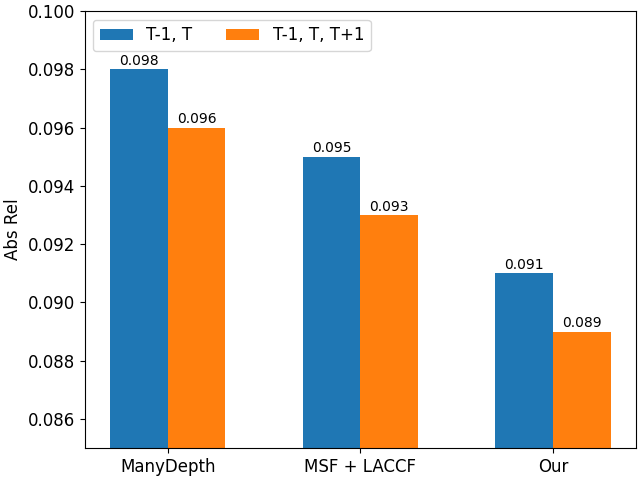
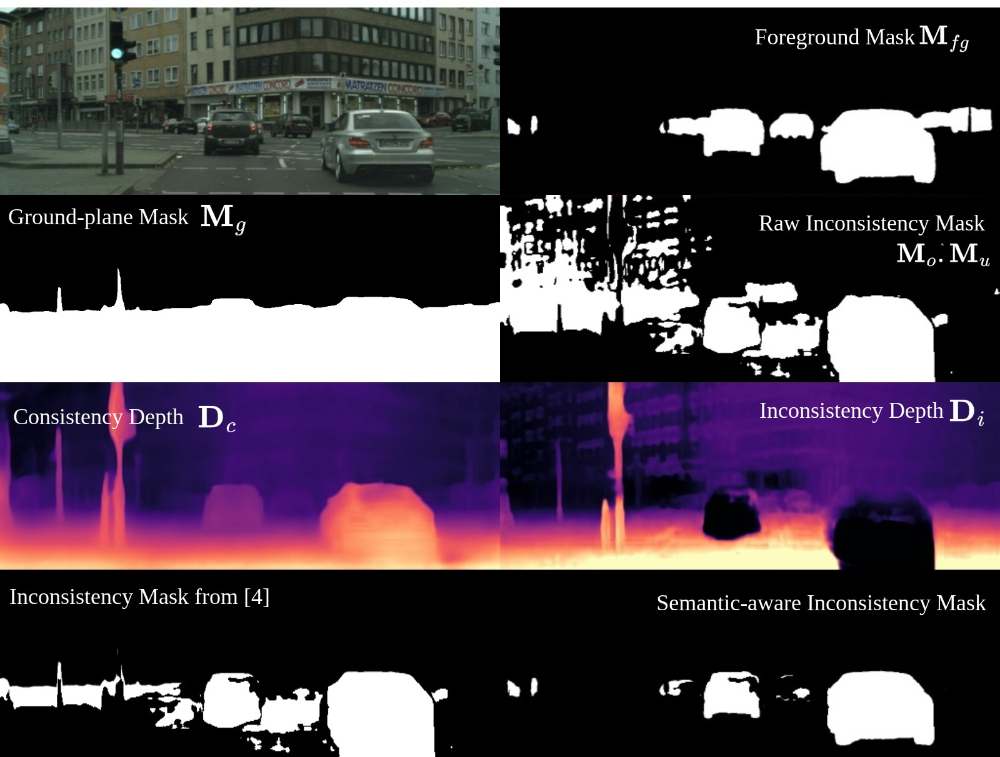
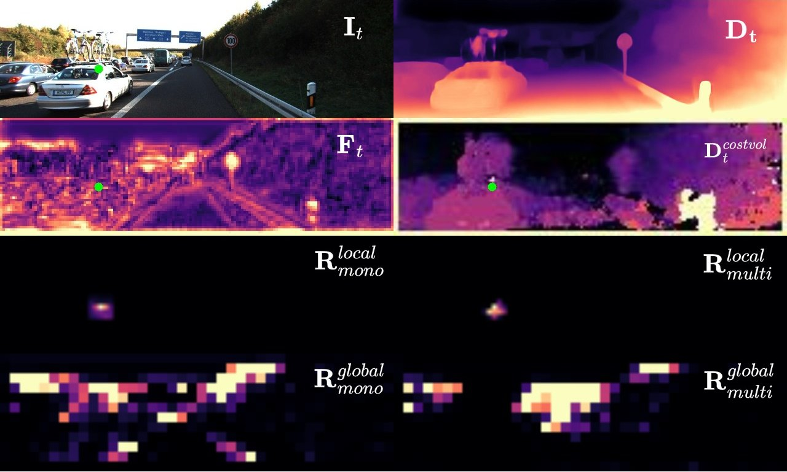
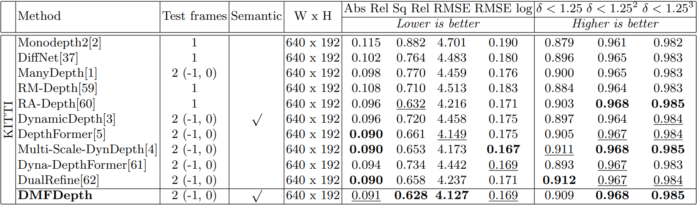
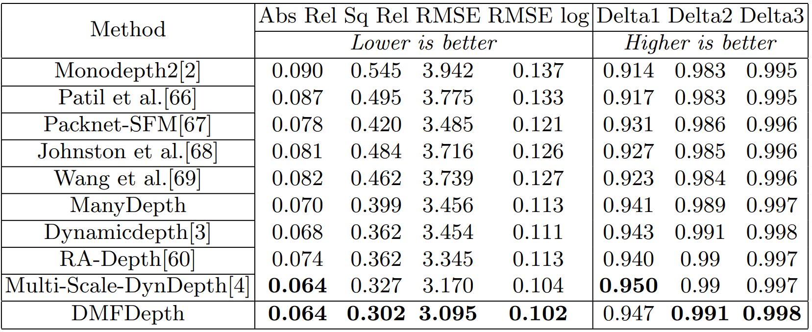

<!DOCTYPE html>
<html>
<head>
  <meta charset="utf-8">
  <!-- Meta tags for social media banners, these should be filled in appropriatly as they are your "business card" -->
  <!-- Replace the content tag with appropriate information -->
  <meta name="description" content="DMFDepth">
  <meta property="og:title" content="SOCIAL MEDIA TITLE TAG"/>
  <meta property="og:description" content="SOCIAL MEDIA DESCRIPTION TAG TAG"/>
  <meta property="og:url" content="URL OF THE WEBSITE"/>
  <!-- Path to banner image, should be in the path listed below. Optimal dimenssions are 1200X630-->
  <meta property="og:image" content="static/image/your_banner_image.png" />
  <meta property="og:image:width" content="1200"/>
  <meta property="og:image:height" content="630"/>


  <meta name="twitter:title" content="TWITTER BANNER TITLE META TAG">
  <meta name="twitter:description" content="TWITTER BANNER DESCRIPTION META TAG">
  <!-- Path to banner image, should be in the path listed below. Optimal dimenssions are 1200X600-->
  <meta name="twitter:image" content="static/images/your_twitter_banner_image.png">
  <meta name="twitter:card" content="summary_large_image">
  <!-- Keywords for your paper to be indexed by-->
  <meta name="keywords" content="Monocular depth estimation, self-supervised">
  <meta name="viewport" content="width=device-width, initial-scale=1">


  <title>DMFDepth: Monocular Depth in Dynamic Scenes with Temporal Information & Beyond</title>
  <link rel="icon" type="image/x-icon" href="static/images/favicon.png">
  <link href="https://fonts.googleapis.com/css?family=Google+Sans|Noto+Sans|Castoro"
  rel="stylesheet">

  <link rel="stylesheet" href="static/css/bulma.min.css">
  <link rel="stylesheet" href="static/css/bulma-carousel.min.css">
  <link rel="stylesheet" href="static/css/bulma-slider.min.css">
  <link rel="stylesheet" href="static/css/fontawesome.all.min.css">
  <link rel="stylesheet"
  href="https://cdn.jsdelivr.net/gh/jpswalsh/academicons@1/css/academicons.min.css">
  <link rel="stylesheet" href="static/css/index.css">

  <script src="https://ajax.googleapis.com/ajax/libs/jquery/3.5.1/jquery.min.js"></script>
  <script src="https://documentcloud.adobe.com/view-sdk/main.js"></script>
  <script defer src="static/js/fontawesome.all.min.js"></script>
  <script src="static/js/bulma-carousel.min.js"></script>
  <script src="static/js/bulma-slider.min.js"></script>
  <script src="static/js/index.js"></script>
</head>
<body>


  <section class="hero">
    <div class="hero-body">
      <div class="container is-max-desktop">
        <div class="columns is-centered">
          <div class="column has-text-centered">
            <h1 class="title is-1 publication-title">DMFDepth: Monocular Depth in Dynamic Scenes with Temporal Information & Beyond</h1>
              <div class="is-size-5 publication-authors">
                <!-- Paper authors -->
                <span class="author-block">
                  <a href="FIRST AUTHOR PERSONAL LINK" target="_blank">Minh Huy Vu Nguyen</a><sup></sup>,</span>
                <span class="author-block">
                  <a href="SECOND AUTHOR PERSONAL LINK" target="_blank">The Hiep Nguyen</a><sup></sup>,</span>
                <span class="author-block">
                  <a href="THIRD AUTHOR PERSONAL LINK" target="_blank">Trung Thai Tran</a><sup></sup>,</span>
                <span class="author-block">
                  <a href="FOURTH AUTHOR PERSONAL LINK" target="_blank">Trong Anh Nguyen</a><sup></sup>,</span>
                <span class="author-block">
                  <a href="FIFTH AUTHOR PERSONAL LINK" target="_blank">Minh Tri Huynh</a><sup></sup>,</span>
                <span class="author-block">
                  <a href="SIXTH AUTHOR PERSONAL LINK" target="_blank">Duc Dung Nguyen</a>
                </span>
              </div>

                  <div class="is-size-5 publication-authors">
                    <span class="author-block">Ho Chi Minh City University of Technology (HCMUT)</span>
                    <!-- <span class="author-block">Institution Name<br>Conferance name and year</span> -->
                    <!-- <span class="eql-cntrb"><small><br><sup>*</sup>Indicates Equal Contribution</small></span> -->
                  </div>

                  <div class="column has-text-centered">
                    <div class="publication-links">
                         <!-- Arxiv PDF link -->
                      <span class="link-block">
                        <a href="https://arxiv.org/pdf/<ARXIV PAPER ID>.pdf" target="_blank"
                        class="external-link button is-normal is-rounded is-dark">
                        <span class="icon">
                          <i class="fas fa-file-pdf"></i>
                        </span>
                        <span>Paper</span>
                      </a>
                    </span>

                    <!-- Supplementary PDF link -->
                    <span class="link-block">
                      <a href="static/pdfs/supplementary_material.pdf" target="_blank"
                      class="external-link button is-normal is-rounded is-dark">
                      <span class="icon">
                        <i class="fas fa-file-pdf"></i>
                      </span>
                      <span>Supplementary</span>
                    </a>
                  </span>

                  <!-- Github link -->
                  <span class="link-block">
                    <a href="https://github.com/YOUR REPO HERE" target="_blank"
                    class="external-link button is-normal is-rounded is-dark">
                    <span class="icon">
                      <i class="fab fa-github"></i>
                    </span>
                    <span>Code</span>
                  </a>
                </span>

                <!-- ArXiv abstract Link -->
                <span class="link-block">
                  <a href="https://arxiv.org/abs/<ARXIV PAPER ID>" target="_blank"
                  class="external-link button is-normal is-rounded is-dark">
                  <span class="icon">
                    <i class="ai ai-arxiv"></i>
                  </span>
                  <span>arXiv</span>
                </a>
              </span>
            </div>
          </div>
        </div>
      </div>
    </div>
  </div>
</section>


<!-- Teaser video-->
<section class="hero teaser">
  <div class="container is-max-desktop">
    <div class="hero-body">
      <video poster="" id="tree" autoplay controls muted loop height="100%">
        <!-- Your video here -->
        <source src="static/videos/banner_video.mp4"
        type="video/mp4">
      </video>
      <h2 class="subtitle has-text-centered">
        The video shows an example of depth maps and absolute-relative error maps between DMFDepth and ManyDepth on the improved KITTI ground truth dataset 
      </h2>
    </div>
  </div>
</section>
<!-- End teaser video -->

<!-- Paper abstract -->
<section class="section hero is-light">
  <div class="container is-max-desktop">
    <div class="columns is-centered has-text-centered">
      <div class="column is-four-fifths">
        <h2 class="title is-3">Abstract</h2>
        <div class="content has-text-justified">
          <p>
            Self-supervised Cost-volume-based monocular depth estimation has received huge consideration since its spatial-temporal awareness ability gives high-quality depth without any labeling cost. However, most recent works only consider alleviating the network sensitivity on dynamic scenes, and less focus on utilizing the temporal multi-view cue. This work proposes the Semantic-aware Inconsistency Mask generated from the difference between multi-view and mono depths on motion objects to alleviate the static-view assumption. We also present an alternative to the Multi-scale Feature Fusion module that extracts and aggregates features from multiple scales to improve the cost volume and the texture feature. Additionally, we design the Local-adaptive Cross-cue module to model the relation between the multi-view and mono-view cues. Finally, we propose the future-awareness distillation loss by adding a reference multi-view depth network that receives an additional frame from the future. We archieve state-of-the-art performance on the KITTI Benchmark with more stable metrics.
          </p>
        </div>
      </div>
    </div>
  </div>
</section>
<!-- End paper abstract -->

<!-- MOTIVATION -->
<section class="section">
  <div class="container is-max-desktop">
    <h2 class="title is-3">Motivation </h2>
    <div class="columns is-centered">

      <div class="column">
        <div class="content">
          <!-- Motivation 2 -->
          <div>
            <!-- Your image here -->
            
            <p class="subtitle has-text-centered">
              We observe using additional future frame improve the depth performance on absolute-relative error.
            </p>
          </div>
        </div>
      </div>

      <div class="column">
        <div class="columns is-centered">
          <div class="column content">
            <div>
              <!-- Your image here -->
              
              <p class="subtitle has-text-centered">
                The intermediate result of the Inconsistency Mask on Cityscapes. Raw Inconsistency Mask is generated from the difference between Consistency Depth Dc and Inconsistency Depth Di. Our Semantic-aware Inconsistency masks using foreground mask Mf g can select dynamic objects better than Multi-Scale-DynDepth filtering with ground-plane mask Mg.
              </p>
            </div>
          </div>

        </div>
      </div>
    </div>


  <div class="hero-body">
    <div class="container">
      <!-- Paper video. -->
      <div class="columns is-centered has-text-centered">
        <div class="item">
          
          <p class="subtitle has-text-centered">
            We model the local-intra-relation (third row) and global-intra-relation (fourth row) at the point at the edge of the object (green dots). Observing that the attention map between the feature and cost volume (second row) are similar, we motivate the way to align the cost-volume cue with the attention map from the feature, and vice-versa. However, aligning with the global attention would misguide the intermediate feature since the feature and the cost volume have a different characteristic.
          </p>
        </div>
      </div>
    </div>
  </div>
</section>

<section class="section">
  <div class="container is-max-desktop">
    <h2 class="title is-3">Method </h2>
      <div>
      <!-- Your image here -->
        
        <p >
          We introduce the Semantic-awareness Inconsistency Mask that generated from the inconsistency between multi-view and monocular depths by filtering noise with the foreground mask from pseudo segmentation map.
        </p>
        <p>
          We design the Multi-scale Feature Fusion module to extracts and aggregates features from multiple scales to improve the cost volume and the texture feature.
        </p>
        <p>
          We propose the Local-adaptive Cross-cue module to combine the multi-view and mono-view cue effectively.
        </p>
        <p>
          We introduce the Future-awareness Distillation Loss using an oracle reference multi-view depth network to further regularize target network achieving
          better performance.
        </p>
      </div>
  </div>
</section>

<section class="section">
  <div class="container is-max-desktop">
    <h2 class="title is-3">Result </h2>
      <div>
      <!-- Your image here -->
        
        <p class="subtitle has-text-centered">
          Depth performance on KITTI eigen.
        </p>
      </div>

      <div>
        <!-- Your image here -->
          
          <p class="subtitle has-text-centered">
            Depth performance on KITTI improved ground truth.
          </p>
        </div>

        <div>
          <!-- Your image here -->
            
            <p class="subtitle has-text-centered">
              Qualitative result on KITTI dataset.
            </p>
          </div>
  </div>
</section>


<!--BibTex citation -->
  <section class="section" id="BibTeX">
    <div class="container is-max-desktop content">
      <h2 class="title">BibTeX</h2>
      <pre><code>BibTex Code Here</code></pre>
    </div>
</section>
<!--End BibTex citation -->


  <footer class="footer">
  <div class="container">
    <div class="columns is-centered">
      <div class="column is-8">
        <div class="content">

          <p>
            This page was built using the <a href="https://github.com/eliahuhorwitz/Academic-project-page-template" target="_blank">Academic Project Page Template</a> which was adopted from the <a href="https://nerfies.github.io" target="_blank">Nerfies</a> project page.
            You are free to borrow the of this website, we just ask that you link back to this page in the footer. <br> This website is licensed under a <a rel="license"  href="http://creativecommons.org/licenses/by-sa/4.0/" target="_blank">Creative
            Commons Attribution-ShareAlike 4.0 International License</a>.
          </p>

        </div>
      </div>
    </div>
  </div>
</footer>

<!-- Statcounter tracking code -->
  
<!-- You can add a tracker to track page visits by creating an account at statcounter.com -->

    <!-- End of Statcounter Code -->

  </body>
  </html>
